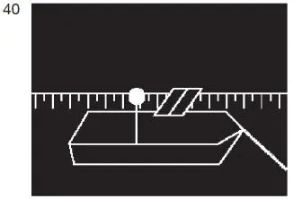
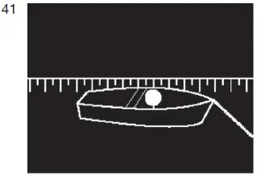

§ 3.20 Bezeichnung der Fahrzeuge beim Stillliegen(Anlage 3: Bild 40, 41)
Binnenschifffahrtsstraßen-Ordnung
1. Mit Ausnahme eines Kleinfahrzeugs und der in den §§ 3.22 und 3.25 genannten Fahrzeuge muss ein Fahrzeug beim Stillliegen bei Nacht
ein von allen Seiten sichtbares weißes gewöhnliches Licht auf der Fahrwasserseite mindestens 3,00 m über der Ebene der Einsenkungsmarken |  |
führen. Anstelle der Bezeichnung nach Satz 1 können auch zwei von allen Seiten sichtbare weiße gewöhnliche Lichter auf der Fahrwasserseite in gleicher Höhe auf dem Vor- und dem Achterschiff geführt werden.
2. Ein Kleinfahrzeug – mit Ausnahme eines Beibootes – muss beim Stillliegen bei Nacht
ein von allen Seiten sichtbares weißes gewöhnliches Licht auf der Fahrwasserseite führen. |  |
3. Die in den Nummern 1 und 2 vorgeschriebene Bezeichnung braucht nicht geführt zu werden, wenn
a) das Fahrzeug zu einer Zusammenstellung von Fahrzeugen gehört, die voraussichtlich nicht vor dem Ende der Nacht aufgelöst wird und die Fahrzeuge dieser Zusammenstellung auf der Fahrwasserseite das Licht nach Nummer 1 führen,
b) sich das Fahrzeug völlig zwischen nicht überfluteten Buhnen befindet oder hinter einem aus dem Wasser ragenden Längswerk stillliegt oder
c) das Fahrzeug am Ufer stillliegt und von diesem aus hinreichend beleuchtet ist.
4. Sind Fahrzeuge an einer besonders dafür ausgewiesenen Stelle zusammengezogen, kann die zuständige Behörde in Sonderfällen einen Teil von ihnen von der Lichterführung nach den Nummern 1 oder 2 befreien.